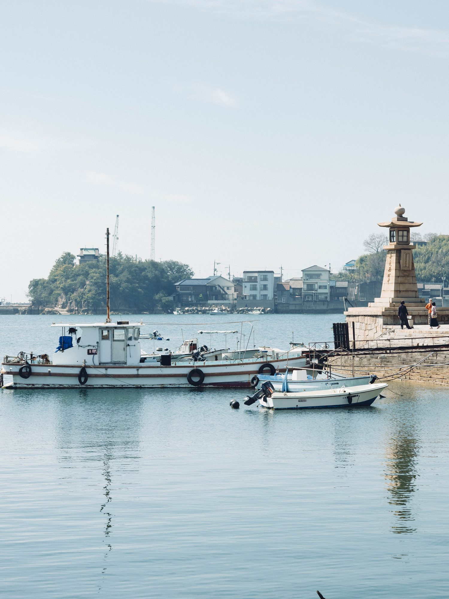
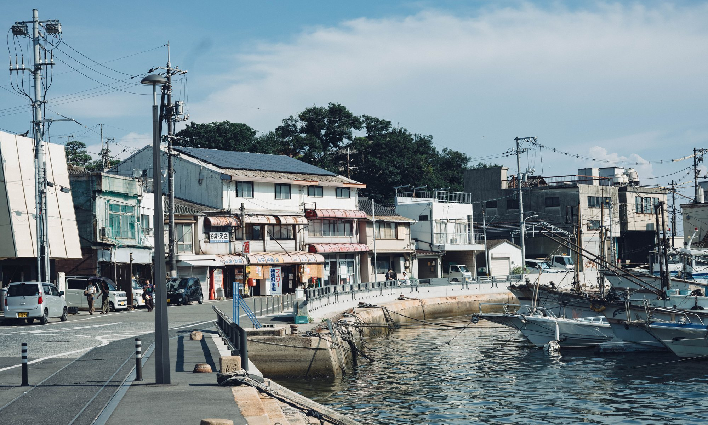
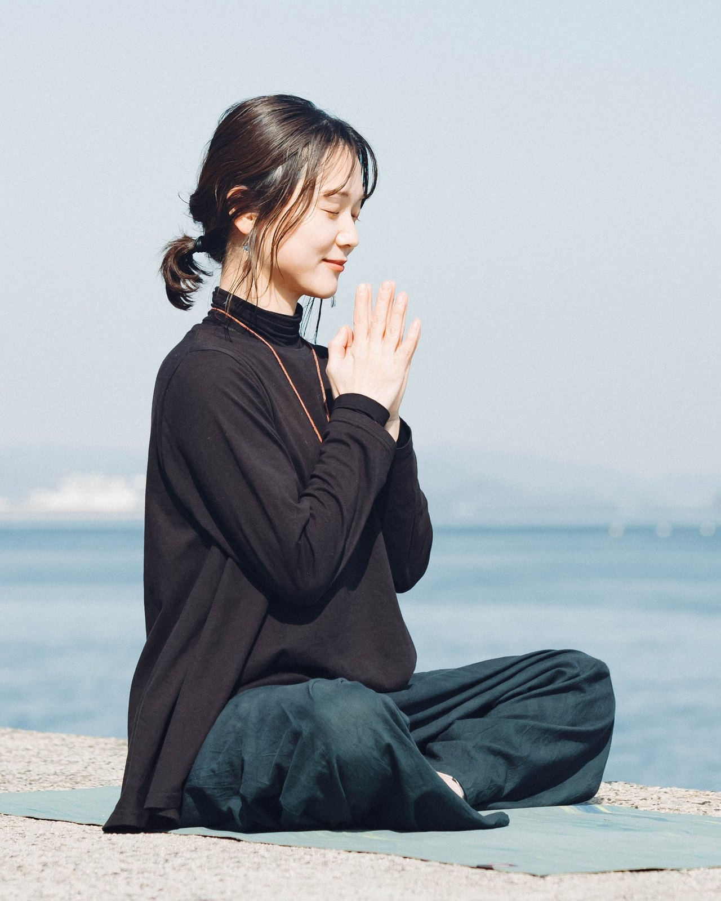
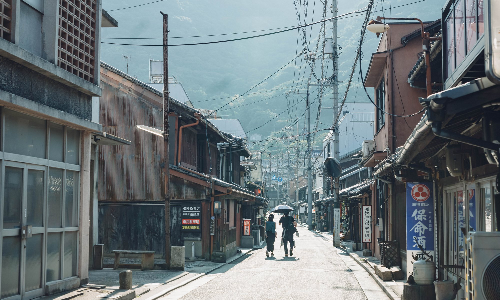
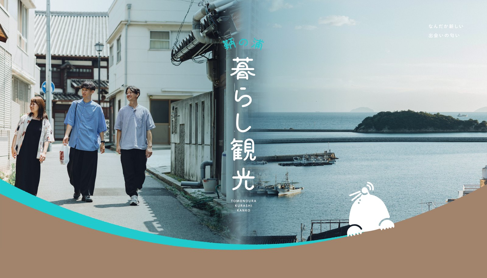

鞆の浦・走島で、さまざまな働き方と生き方に触れる1泊2日の暮らし観光。転職でも、スキルアップでもなく、誰かの暮らしのそばで、自分のこれからを考えてみる旅です。

出発の前に、自分が何について考えてみたいのかを言葉にしておきます。
移住した人、漁師、ヨガの先生。その土地で暮らし、働く人に会います。
持ち帰ったものをもう一度話し、これからの暮らしに置きなおします。
キャリアを考える方法は、転職サイトと自己分析だけではありません。
これからのキャリアを考えるとき、多くの人は転職サイトを開いたり、自己分析のシートを埋めたりします。それも、もちろん有効な方法のひとつです。ただ、「どんな仕事をするか」だけを考えていても、答えが出ないことがあります。
これからを決めているのは、仕事の条件だけではないからです。どんな場所で暮らしたいのか。どんな働き方をしたいのか。何を大切にして生きたいのか。どんな人と関わっていたいのか。どんな時間の使い方をしたいのか。そこまで含めて、はじめて「これから」の話になります。
今回の旅で大切にしたいのは、誰かの暮らしや人生の歩み方から、自分のキャリアを考えることです。知らない土地へ行き、自分とは違う暮らしをしている人と話す。「こんな生き方もあるんだ」と知ったとき、はじめて見えてくる自分の価値観があるかもしれません。
この旅は、答えを決めるためのものではありません。自分がこれから考えていきたい問いと、小さな次の一歩を持ち帰るための旅です。

理由は、景色ではありません。そこで暮らしている人に、歩いて会いにいけるからです。
鞆の浦は、広島県福山市の南端にある港町です。江戸時代の港のかたちが今も残る、瀬戸内海に面したまち。観光地としても知られています。
このまちには、東京から移住してきた人、家業を継いだ人、地元で店を開いた人が、それぞれの理由で暮らしています。まちを歩けば、話しかけられる。商店の人と立ち話が始まる。そういう距離感のあるまちです。
鞆の浦から船で20分ほど沖に、走島（はしりじま）という小さな島があります。今回は、この島にも渡って一泊します。島で漁師をしながら宿を営む人の話を、島の時間のなかで聞くためです。
まちと、島。ふたつの場所で、違う選択をした人たちの人生に触れる。景色のいい瀬戸内でキャリアを考えるのではなく、そこで実際に暮らしている人の人生に触れること。それが、鞆の浦・走島を選んだ理由です。
有名な観光名所ではなく、その土地の日常へ入っていき、暮らしに触れる旅のこと。
店を営む人や住民と話してみる、暮らしのための場所へ足を運んでみる、何気ない路地を歩いてみる。まちに流れる日常の入り口に立ってみると、まちの見え方がガラッと変わります。
そうやってまちのことを理解することで、人やまちとの小さな関係性が生まれていく。そんな新しい旅のあり方を、共催する関係編集舎コト暮らしは「暮らし観光」と呼んでいます。今回の1泊2日も、この考え方を大切に企画されています。
今回は「1泊2日の旅行に参加する」プログラムではありません。旅の前と後にオンラインで集まる、3つのステップでひとつの体験として設計しています。
コト暮らしの長田涼さんから、暮らし観光とは何か、鞆の浦とはどんなまちなのか、そこにはどのような暮らしがあるのか、そして長田さん自身がなぜ鞆の浦で暮らしているのかを聞きます。
あわせて、参加するあなた自身も考えます。「今回の旅で、自分は何について考えてみたいだろう？」——旅のテーマや問いを、ひとつ持って出発する。何も決めずに現地へ行くのではなく、自分なりの問いを携えていくことを大切にします。
まちを歩き、人に会い、話を聞く。船で島へ渡り、島の時間のなかでもう一度考える。参加者同士で話す時間と、ひとりで考える余白の、両方を置いた2日間です。
旅から帰ったあと、もう一度オンラインで集まります。写真やメモを見返しながら、何が一番印象に残ったのか。誰の言葉が残っているのか。自分の考えはどう揺れたのか。以前とは違って見えるものはあるか。これから何について考えたいか。日常で何を少し試してみたいか。
参加者同士でもう一度対話し、旅で得た気づきを、日常へつなげるところまでを今回のプログラムに含めます。
キャリア講師から正解を教えてもらうのではありません。実際にその土地で人生を営んでいる人から、直接、話を聞きます。
有名なスポットを巡るだけではありません。商店、路地、人との会話。その土地の日常のほうへ入っていきます。
人の話を聞いて終わりにはしません。「自分だったら、どうだろう？」——そこまで、参加者同士で話しながら考えます。
島での自由時間、朝のジャーナリング。予定は詰め込みません。人と話す時間と、ひとりで考える時間の両方をつくります。
それぞれ違う道を通って、いまこの土地で暮らし、働いている3人です。

合同会社コト暮らし 共同代表
1991年、京都生まれ。スポーツ大学を卒業後、ユニクロ→スポーツイベント会社→IT企業→コミュニティフリーランスを経て、2023年に夫婦で「コト暮らし」を設立し共同代表に就任。2022年に東京から広島県福山市・鞆の浦へ移住。
現在は、鞆の浦「暮らし観光」の事業や、全国各地で「ローカル開業」の取り組みに従事。ローカル開業カレッジ主宰／石見銀山地域経営研究所コミュニケーションデザイナー／POOLO LIFE運営責任者／双葉町関係人口創出プロジェクトPM。2025年に『ともたち -鞆の日常から生まれる、暮らし観光-』を出版。
リモートワーク、パン屋、子育て、地域での活動。複数の営みを組み合わせながら暮らしています。今回は、なぜ東京から鞆の浦へ移住したのか、何を大切に働いているのか、どんな暮らしをつくりたいと思っているのかを聞きます。

漁師／一棟貸ホテル「バケーションレンタルホテルKAI」
1988年、走島生まれ。大学進学で大阪へ出たのち、福山にUターンして就職。製造業→福祉関係→食品営業（UCCコーヒー）を経て、30歳を機に脱サラし、生まれ故郷の走島へ。民宿「太進館」の4代目を目指して帰郷しました。
5年ほど前から「環境活動 × 観光」＝エシカルツーリズムという体験プランの運営を開始。地産食材（海苔）のリブランディング、海洋プラごみのアップサイクル商品開発にも取り組みます。2022年11月末に一棟貸ホテル「バケーションレンタルホテルKAI」を開業し、現在に至ります。
家業、島での仕事、地域との関わり、これまでの人生。「地域で生きる」という選択について聞きます。今回の宿泊先も、濱上さんが営むこのKAI。走島の天女が浜ビーチ沿いに佇む一棟貸切の宿で、漁師町ならではの獲れたての海の幸が並びます。

niki yoga 主宰／ヨガインストラクター
鞆の浦出身。3児の母。産後、不安定な精神状態をヨガに救われたことがきっかけで、インストラクターの道へ。エフピコアリーナふくやまをはじめとするフィットネス講師を経て、「鞆の浦に恩返しがしたい」という想いから、2024年にヨガスタジオ「niki -間-」を開きました。人を元気にする明るさと、独自の世界観を持っている方です。
花で感情を整え、心を癒す花療法にも取り組みます。仙酔島の植物でエッセンスをつくり、感謝を捧げることで、人も土地もともに歓び合う——そんな活動を続けています。
2日目に「niki yoga」を訪ね、地域で仕事をつくること、キャリア、まちとの関わりについて話を聞きます。
[要確認：niki yoga のWebサイト・SNSのURL]

集合から解散まで。予定を詰め込みすぎず、考える余白を挟みながら進みます。
［各プログラムの詳細な時刻は[要確認：後日確定]］
鞆の浦「ありそろう」に集合。今回の旅で考えてみたいテーマを、参加者同士で共有するところから始めます。
東京から鞆の浦へ移住した長田さん。リモートワーク、パン屋、子育て、地域での活動。複数の営みを組み合わせながら暮らす人の、これまでと現在地を聞きます。
一般的な観光ツアーではありません。商店、路地、日常の風景を歩きながら「鞆の浦で暮らす」ということに触れていきます。偶然の出会いや寄り道も、大切にします。
鞆の浦から船に乗って、20分ほど。走島へ移動します。
走島で暮らし、働き、地域に関わっている濱上さんから話を聞きます。家業、島での仕事、地域との関わり、これまでの人生を通して「地域で生きる」という選択に触れます。
話を聞いたら、すぐ次へ進むのではありません。海辺を歩く。ひとりで考える。誰かと話す。ぼーっとする。そうした余白も、今回の大切なプログラムです。
みんなで食事を囲みながら、一日を振り返ります。宿泊は、走島の一棟貸しの宿「KAI」。食卓に並ぶのは、漁師町ならではの獲れたての海の幸です。
前日に感じたこと、心に残った言葉、自分のなかに生まれた問いを書き出します。
鞆出身のヨガインストラクター・西原由弥佳さんのスタジオ「niki -間-」へ。地域で仕事をつくること、キャリア、地域との関わりについて話を聞きます。
1日目とは、少し違う視点で歩きます。今度は、自分のなかに生まれた問いを持って。
少人数に分かれて、それぞれ気になった場所へ。
個人ワーク → 3〜4人での対話 → 全員で共有。この1泊2日で何を感じたのかを、自分の言葉にしていきます。
この2日間で「理想のキャリアが決まる」とも「やりたいことが見つかる」とも、お約束はしません。目指しているのは、もう少し手前の変化です。
知らない働き方・暮らし方・価値観に触れることで、自分がこれから考えたいことの輪郭が少し見え、小さな次の一歩を持って日常に戻る。そこまでを、この旅のゴールにしています。
転職したいと決まっているわけではない。今の仕事が嫌なわけでもない。それでも、ふと立ち止まる瞬間があります。
今の仕事が嫌なわけではない。でも「このままでいいのかな」と感じることが、少しずつ増えてきた。
大きな不満があるわけではない。だからこそ、誰かに相談するほどのことでもない気がしてしまう。
やりたいことは、なんとなくある。けれど、動き出すほどの確信がまだない。
「もう少し考えてから」と思っているうちに、また同じ季節が巡ってくる。
ひとりで考えていると、いつも同じところをぐるぐるしてしまう。
自己分析はやってみた。本も読んだ。それでも、答えらしいものはまだ出てこない。
あたらしい旅の学校 POOLOは、旅をきっかけに、自分の人生やこれからについて考える場です。旅の知識を学ぶ場所ではなく、旅、対話、仲間、問い、実践を通して「自分がどう生きたいのか」を考える。POOLOには問いを持って、世界や人生に向き合うという文化があります。
合同会社コト暮らしは、鞆の浦を拠点に「暮らし観光」という新しい観光のあり方を実践しています。観光地として地域を消費するのではなく、その土地の暮らしや人と出会い、まちとの小さな関係が生まれていく。そんな旅をつくっている会社です。暮らし観光には、何気ない日常や暮らしを、面白いものとして見つけ直すという考え方があります。
この2つを、掛け合わせます。街と出会う。人と出会う。知らなかった暮らしに触れる。自分の価値観が少し揺さぶられる。参加者同士で話す。他者の視点にも触れる。ひとりで考える。自分の問いが少し深まる。そして、また街を見る。今回つくりたいのは、そういうプロセスです。
だから、答えを教えるプログラムにはしません。旅を終えたとき「答えはまだないけれど、前より考えたいことが分かった」と思えること。それを目指しています。


＊POOLO公式LINEの友だち追加ページが開きます
＊申込締切：2026年10月30日（金）
プログラムの参加費と、現地でお支払いいただく実費は分かれています。
事前オンライン・現地1泊2日・事後オンラインを含む、プログラム参加費です。
POOLO生の参加費です。含まれる内容は一般参加と同じです。
宿泊（走島の一棟貸し「KAI」）・夕食・朝食など。参加費とは別に、現地で回収します。
＊お支払いの合計は、一般参加 35,000円／POOLO生 32,000円（参加費＋現地でお支払いいただく15,000円）。
＊このほか、鞆の浦までの往復交通費は各自でご負担ください。
Q.一人で参加しても大丈夫ですか？
はい。おひとりでの参加を想定しています。初日の自己紹介から、参加者同士で話す時間を丁寧に置いていますので、初対面の方ばかりでも大丈夫です。
Q.POOLOに参加したことがなくても参加できますか？
はい。一般参加が可能です。POOLOに関わったことがない方も歓迎しています。
Q.20代・30代以外でも参加できますか？
はい。主な対象は旅が好きな20〜30代ですが、年齢の制限は設けていません。
Q.キャリアについて明確な悩みがなくても参加できますか？
はい。むしろ「はっきりした悩みではないけれど、なんとなく考えたい」という方を想定しています。悩みを整理してから来る必要はありません。
Q.宿泊はどのような形ですか？
走島にある一棟貸しの宿「バケーションレンタルホテルKAI」に、参加者全員で宿泊します。部屋割り（相部屋／個室）や持ち物については[要確認：後日ご案内]。
Q.現地まではどうやって行けばいいですか？
[要確認：鞆の浦へのおすすめのアクセス（最寄り駅・所要時間・推奨の到着便）を追記します]
Q.雨天の場合はどうなりますか？
[要確認：雨天時のプログラム変更・船の欠航時の対応を追記します]
Q.キャンセルした場合は返金されますか？
お申し込み後の返金はいたしかねます。宿や現地の受け入れ準備の都合によるものです。ご了承のうえ、お申し込みください。
Q.事前・事後オンラインへの参加は必須ですか？
事前・事後のオンラインは、1泊2日と合わせてひとつのプログラムとして設計しています。そのため、どちらもご参加いただくことを前提としています。[要確認：やむを得ず参加できない場合の扱い（録画共有の有無など）]
鞆の浦と走島で、誰かの暮らしや人生に触れながら、自分のこれからについて考えてみる。2日間で、答えは出ないかもしれません。それでも、帰りの船やバスの中で、少しだけ違うことを考えている自分がいるはずです。
＊POOLO公式LINEの友だち追加ページが開きます
＊定員10名／申込締切：2026年10月30日（金）